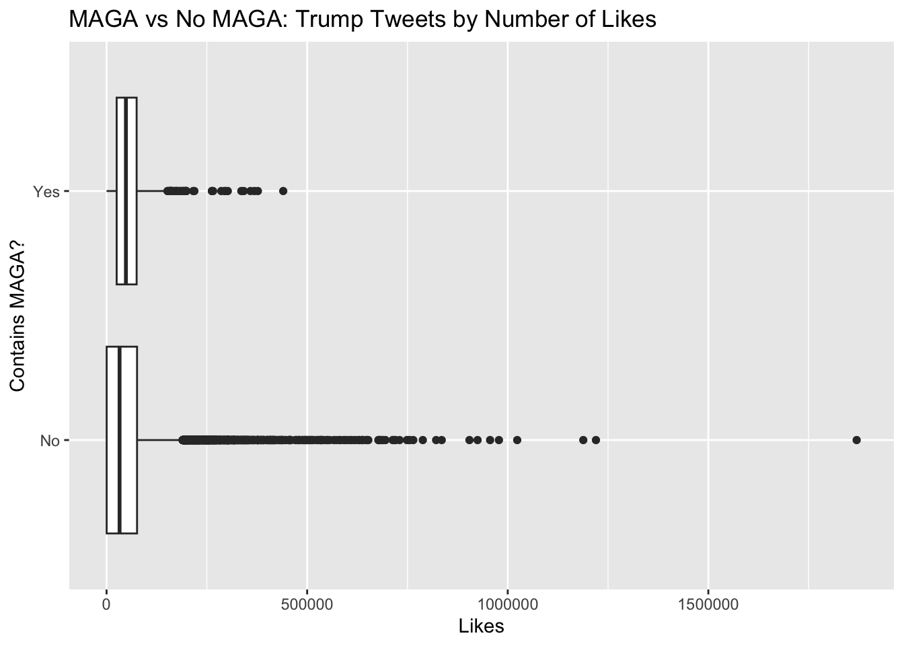
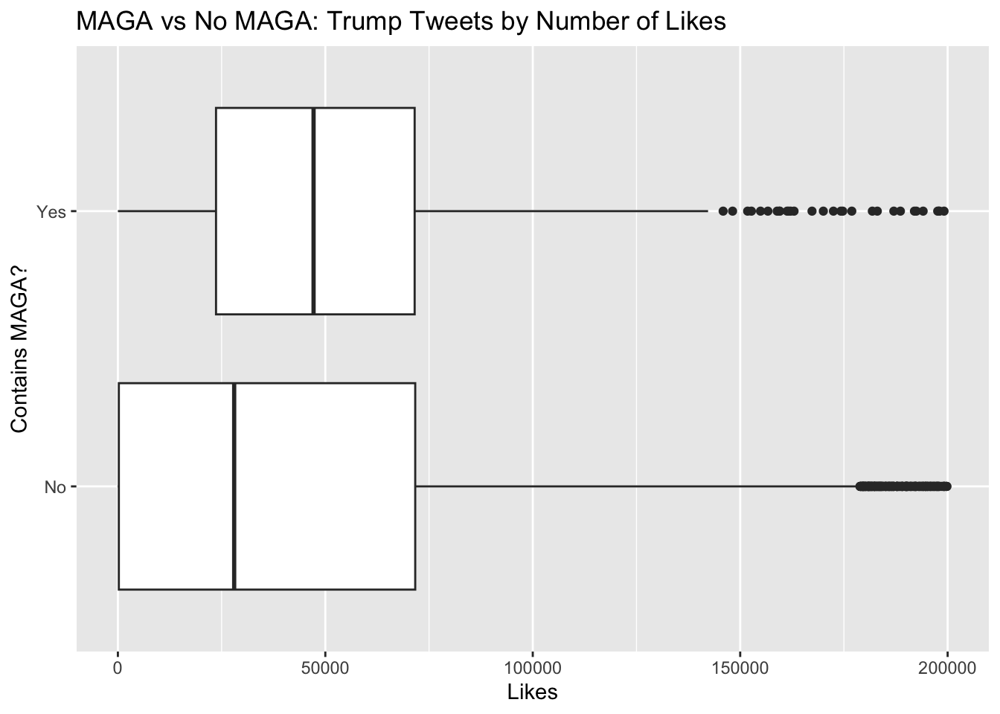

Show code
library(readr)
tweets <- read_csv("~/Downloads/tweets.csv",show_col_types = FALSE)Analysis of Donald Trump Tweets until Jan 8th, 2021
Noah Manning
March 5, 2025
This is an analysis of tweets made on Donald Trumps Twitter account from May 4th, 2009 until the eventual suspension of his account on January 8th, 2021.
First we will use the “str_to_lower” function to make it easier for us to find character strings in our data considering some of them are written in all caps. We will also use “str_length” to find the number of characters in each tweet. These new variables will potentially help us create visualizations and make assertions about our data.
Now we will do our first analysis. I am curious what hashtag he used the most during this time period. The visualization below shows that.
Hashtag Frequency
1 #trump2016 834
2 #makeamericagreatagain 570
3 #maga 528
4 #celebapprentice 297
5 #celebrityapprentice 152
6 #1 144
7 #trump 126
8 #americafirst 111
9 #timetogettough 100
10 #trumpvlog 83
11 #draintheswamp 79
12 #trumpforpresident 77
13 #kag2020 74
14 #votetrump 70
15 #covid19 67Now, we can see that #1 is the sixth most common hashtag, but there is a problem. That isn’t a hashtag, it’s just a reference to the number one. So now we will use a lookaround to make sure that there isn’t a number immediately after the hashtag so that we capture only the hashtags that we want.
Hashtag Frequency
1 #trump2016 834
2 #makeamericagreatagain 570
3 #maga 528
4 #celebapprentice 297
5 #celebrityapprentice 152
6 #trump 126
7 #americafirst 111
8 #timetogettough 100
9 #trumpvlog 83
10 #draintheswamp 79
11 #trumpforpresident 77
12 #kag2020 74
13 #votetrump 70
14 #covid19 67
15 #trump2016https 66We succesfully used the lookaround to remove the “#1” row! Looking at this table, we can see that many of his top hashtags have to do with his 2016 campaign and patriotic american messaging.
For our next visualization, I will look at the influence of tweets with “maga”. MAGA has long been a rallying cry for Trump and his supporters, but does it have an impact on the amount of interaction with his tweets online? We are also removing retweets and replies as they may not always get the same amount of interaction as his tweets.
library(ggplot2)
tweets <- tweets|>
mutate(has_maga=ifelse(str_detect(lower_text,"maga"),"Yes","No"))
tweets_no_rt<-tweets|>
filter(isRetweet=="FALSE")|>
filter(!str_detect(text,"^@"))|>
filter(!str_detect(text,"^RT"))|>
filter(!str_detect(text, '^"+'))
ggplot(tweets_no_rt, aes(y=has_maga,x=favorites))+
geom_boxplot()+
labs(title = "MAGA vs No MAGA: Trump Tweets by Number of Likes",x="Likes",y="Contains MAGA?")
Let’s zoom in on the IQR to find out a little more about the plot.

Although his non-MAGA tweets have higher maximum likes number and the distribution is much wider, we can see that the tweets that contain the phrase “MAGA” have more median likes, and a similar 3Q. It is possible that there is some amount of colinnearlity, where the tweets that contain MAGA are more related to his presidency/campaign and are therefore more popular, but that would require further investigation.
Citation
Shantanu, Roy. “Donald Trump Tweets Dataset.” Kaggle, 2021, www.kaggle.com/datasets/codebreaker619/donald-trump-tweets-dataset. Accessed 5 March 2025